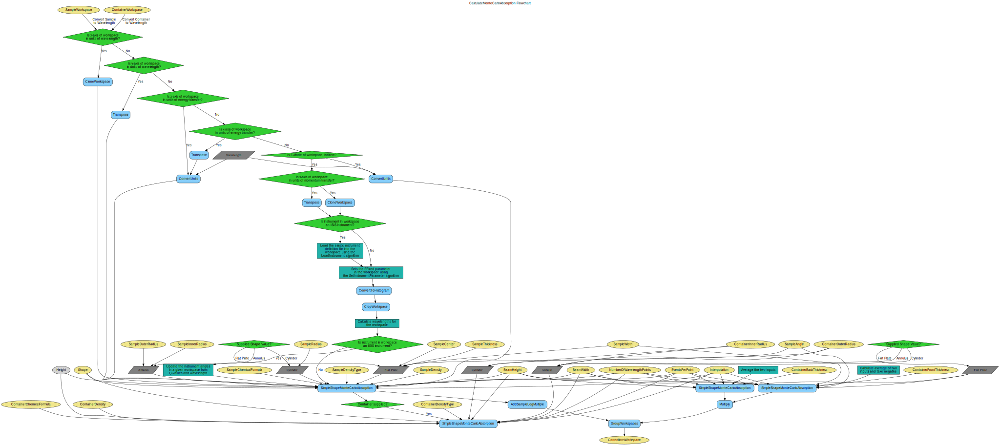

\(\renewcommand\AA{\unicode{x212B}}\)
CalculateMonteCarloAbsorption v1¶
{kind=link}
CalculateMonteCarloAbsorption dialog.¶
Summary¶
Calculates indirect absorption corrections for a given sample shape, using a MonteCarlo simulation.
See Also¶
Properties¶
Name |
Direction |
Type |
Default |
Description |
|---|---|---|---|---|
SampleWorkspace |
Input |
Mandatory |
Sample Workspace |
|
SampleChemicalFormula |
Input |
string |
Chemical formula for the sample material |
|
SampleCoherentXSection |
Input |
number |
0 |
The coherent cross-section for the sample material in barns. To be used instead of Chemical Formula. |
SampleIncoherentXSection |
Input |
number |
0 |
The incoherent cross-section for the sample material in barns. To be used instead of Chemical Formula. |
SampleAttenuationXSection |
Input |
number |
0 |
The absorption cross-section for the sample material in barns. To be used instead of Chemical Formula. |
SampleDensityType |
Input |
string |
Mass Density |
Use of Mass density or Number density for the sample. Allowed values: [‘Mass Density’, ‘Number Density’] |
SampleNumberDensityUnit |
Input |
string |
Atoms |
Choose which units SampleDensity refers to. Allowed values: [Atoms, Formula Units]. Allowed values: [‘Atoms’, ‘Formula Units’] |
SampleDensity |
Input |
number |
0 |
The value for the sample Mass density (g/cm^3) or Number density (1/Angstrom^3). |
BeamHeight |
Input |
number |
1 |
Height of the beam (cm) |
BeamWidth |
Input |
number |
1 |
Width of the beam (cm) |
NumberOfWavelengthPoints |
Input |
number |
10 |
Number of wavelengths for calculation |
EventsPerPoint |
Input |
number |
1000 |
Number of neutron events |
Interpolation |
Input |
string |
Linear |
Type of interpolation. Allowed values: [‘Linear’, ‘CSpline’] |
MaxScatterPtAttempts |
Input |
number |
5000 |
Maximum number of tries made to generate a scattering point |
ContainerWorkspace |
Input |
Container Workspace |
||
ContainerChemicalFormula |
Input |
string |
Chemical formula for the container material |
|
ContainerCoherentXSection |
Input |
number |
0 |
The coherent cross-section for the can material in barns. To be used instead of Chemical Formula. |
ContainerIncoherentXSection |
Input |
number |
0 |
The incoherent cross-section for the can material in barns. To be used instead of Chemical Formula. |
ContainerAttenuationXSection |
Input |
number |
0 |
The absorption cross-section for the can material in barns. To be used instead of Chemical Formula. |
ContainerDensityType |
Input |
string |
Mass Density |
Use of Mass density or Number density for the container. Allowed values: [‘Mass Density’, ‘Number Density’] |
ContainerNumberDensityUnit |
Input |
string |
Atoms |
Choose which units ContainerDensity refers to. Allowed values: [Atoms, Formula Units]. Allowed values: [‘Atoms’, ‘Formula Units’] |
ContainerDensity |
Input |
number |
0 |
The value for the container Mass density (g/cm^3) or Number density (1/Angstrom^3). |
Shape |
Input |
string |
FlatPlate |
Geometric shape of the sample environment. Allowed values: [‘FlatPlate’, ‘Cylinder’, ‘Annulus’] |
Height |
Input |
number |
0 |
Height of the sample environment (cm) |
SampleWidth |
Input |
number |
0 |
Width of the sample environment (cm) |
SampleThickness |
Input |
number |
0 |
Thickness of the sample environment (cm) |
SampleCenter |
Input |
number |
0 |
Center of the sample environment |
SampleAngle |
Input |
number |
0 |
Angle of the sample environment with respect to the beam (degrees) |
SampleRadius |
Input |
number |
0 |
Radius of the sample environment (cm) |
SampleInnerRadius |
Input |
number |
0 |
Inner radius of the sample environment (cm) |
SampleOuterRadius |
Input |
number |
0 |
Outer radius of the sample environment (cm) |
ContainerFrontThickness |
Input |
number |
0 |
Front thickness of the container environment (cm) |
ContainerBackThickness |
Input |
number |
0 |
Back thickness of the container environment (cm) |
ContainerInnerRadius |
Input |
number |
0 |
Inner radius of the container environment (cm) |
ContainerOuterRadius |
Input |
number |
0 |
Outer radius of the container environment (cm) |
CorrectionsWorkspace |
Output |
WorkspaceGroup |
corrections |
Name of the workspace group to save correction factors |
Warning
This algorithm is deprecated in favour of PaalmanPingsMonteCarloAbsorption.
Description¶
This algorithm calculates the absorption factors, required for the Paalman Pings method of absorption corrections, using a Monte Carlo procedure. Currently only the acc and ass factors are calculated.
CalculateMonteCarloAbsorption subsequently calls the SimpleShapeMonteCarloAbsorption v1 algorithm for the calculation of each absorption factor.
There are three existing Shape Options: Flat Plate, Annulus and Cylinder. Each shape is defined by a different set of geometric parameters.
Flat Plate parameters: SampleThickness and SampleWidth for the Sample, ContainerFrontThickness and ContainerBackThickness for the container. Annulus parameters: SampleInnerRadius and SampleOuterRadius for the Sample, ContainerInnerRadius and ContainerOuterRadius for the container. Cylinder parameters: SampleRadius for the sample, ContainerInnerRadius and ContainerOuterRadius for the container.
The location and orientation of the sample can be defined with SampleCenter and SampleAngle.
When container is defined, the corrections are calculated for the inner and outer walls of the container and then they are multiplied together, which is an approximation.
Workflow¶
Usage¶
Example - CalculateMonteCarloAbsorption
sample_ws = CreateSampleWorkspace(Function="Quasielastic",
XUnit="Wavelength",
XMin=-0.5,
XMax=0.5,
BinWidth=0.01)
# Efixed is generally defined as part of the IDF for real data.
# Fake it here
inst_name = sample_ws.getInstrument().getName()
SetInstrumentParameter(sample_ws, ComponentName=inst_name,
ParameterName='Efixed', ParameterType='Number', Value='4.1')
container_ws = CreateSampleWorkspace(Function="Quasielastic",
XUnit="Wavelength",
XMin=-0.5,
XMax=0.5,
BinWidth=0.01)
SetInstrumentParameter(container_ws, ComponentName=inst_name,
ParameterName='Efixed', ParameterType='Number', Value='4.1')
corrections = CalculateMonteCarloAbsorption(SampleWorkspace = sample_ws,
SampleChemicalFormula = 'H2-O',
SampleDensityType = 'Mass Density',
SampleDensity = 1.0,
ContainerWorkspace = container_ws,
ContainerChemicalFormula = 'Al',
ContainerDensityType = 'Mass Density',
ContainerDensity = 1.0,
EventsPerPoint = 200,
BeamHeight = 3.5,
BeamWidth = 4.0,
Height = 2.0,
Shape = 'FlatPlate',
SampleWidth = 1.4,
SampleThickness = 2.1,
ContainerFrontThickness = 1.2,
ContainerBackThickness = 1.1)
ass_ws = corrections[0]
acc_ws = corrections[1]
print("Workspaces: " + str(ass_ws.getName()) + ", " + str(acc_ws.getName()))
print("Y-Unit Label of " + str(ass_ws.getName()) + ": " + str(ass_ws.YUnitLabel()))
print("Y-Unit Label of " + str(acc_ws.getName()) + ": " + str(acc_ws.YUnitLabel()))
Output:
Workspaces: corrections_ass, corrections_acc
Y-Unit Label of corrections_ass: Attenuation factor
Y-Unit Label of corrections_acc: Attenuation factor
Categories: AlgorithmIndex | Workflow\Inelastic | CorrectionFunctions\AbsorptionCorrections | Workflow\MIDAS
Source¶
Python: CalculateMonteCarloAbsorption.py